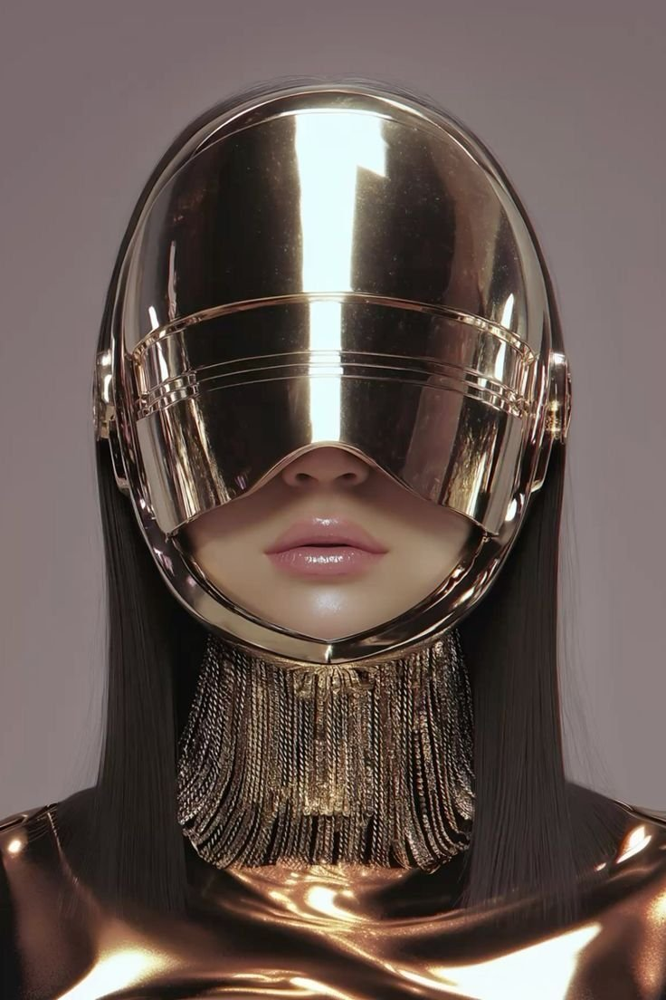
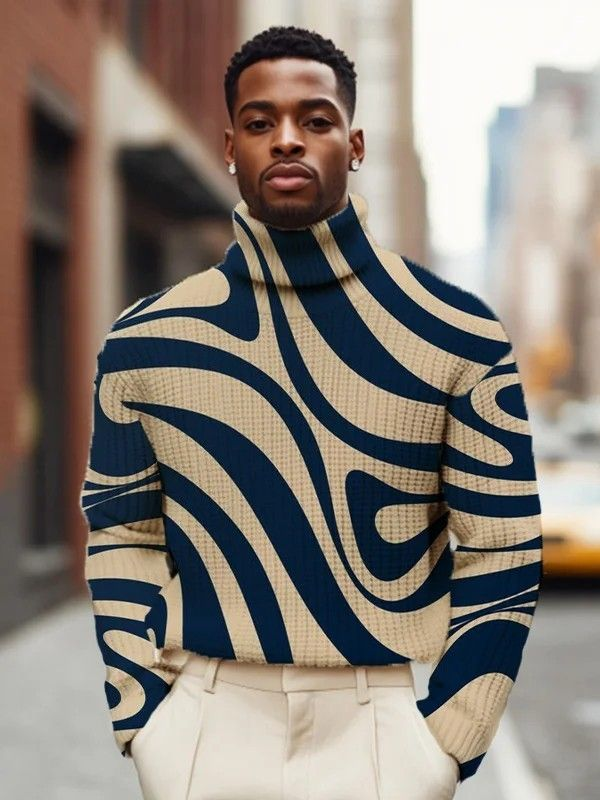
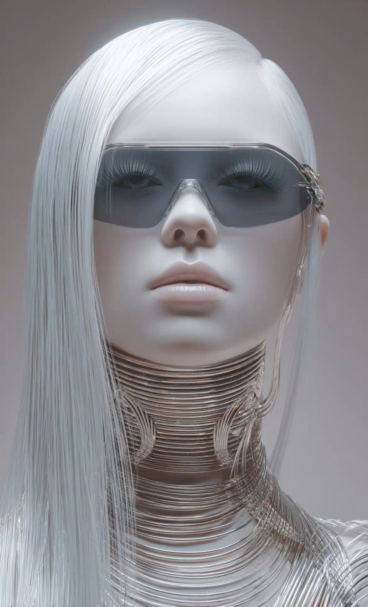
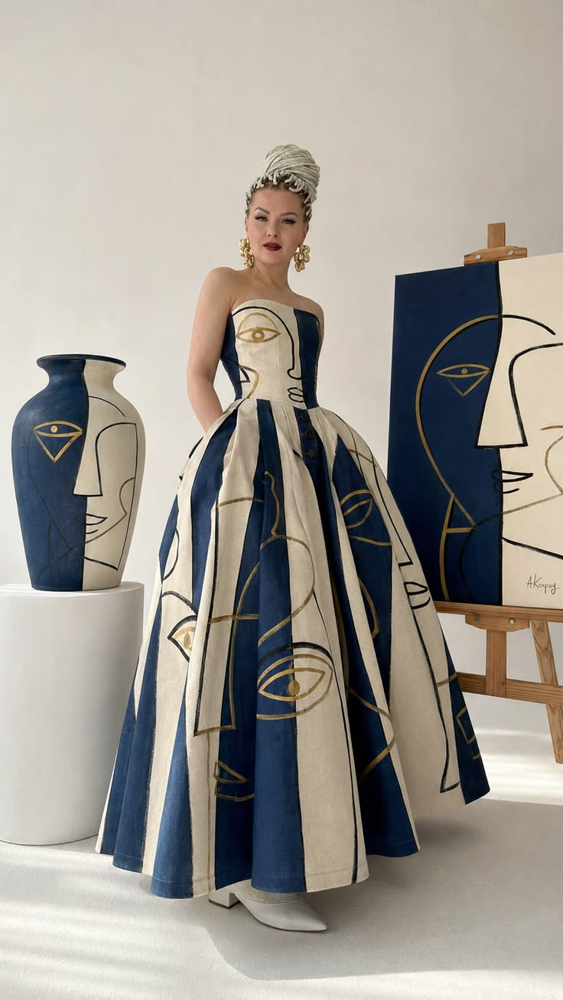
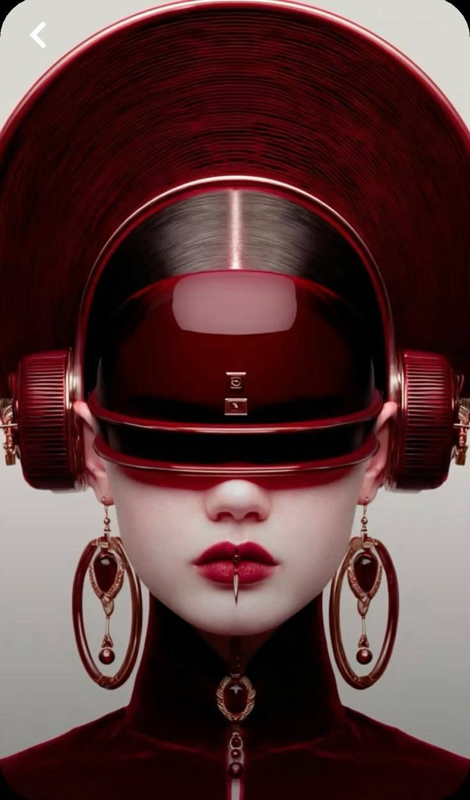
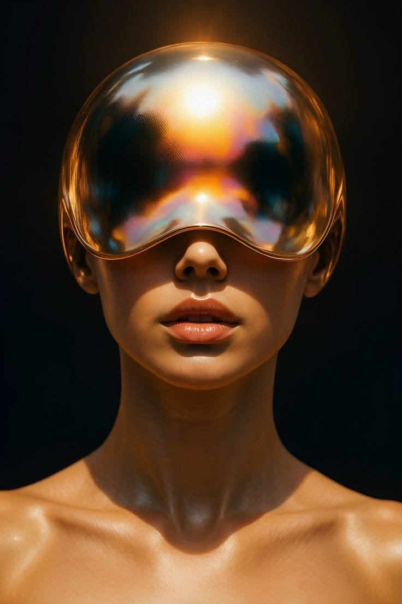
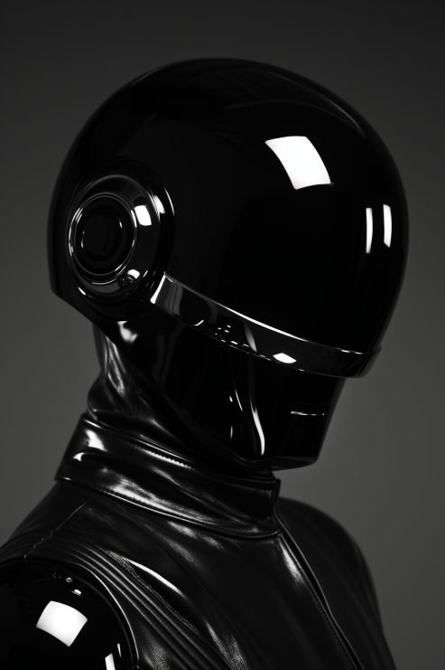
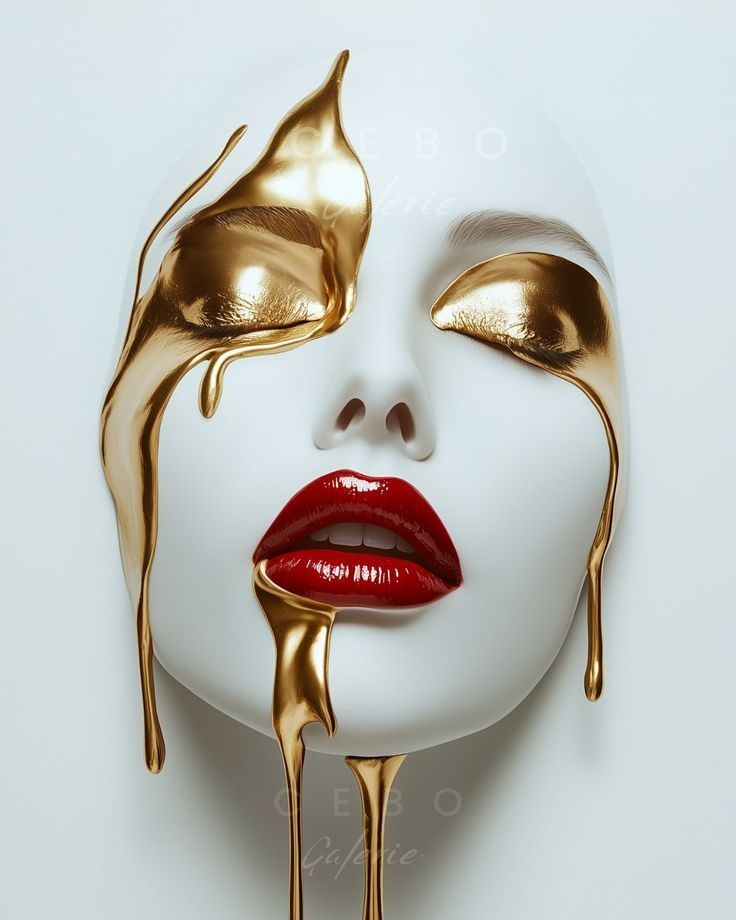
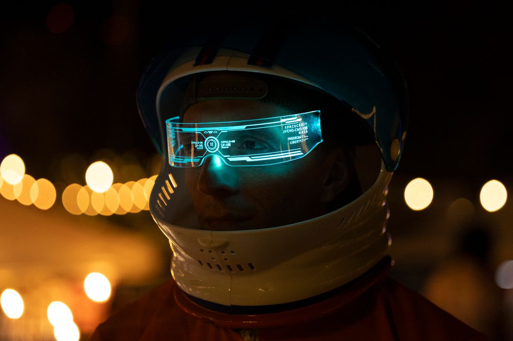

Drag meGestures & physics
Draggable · momentum — 2

Draggable · return springs — 3


Draggable · axis — 3


Swipeable — 2


Swipe actions — 1

Drag either way
It stops where the action shows
Pressable — 1

Magnetic — 2

Layout & FLIP
flip-filter — 1
flip-reorder — 1
Click any card — it jumps to the front and the rest reflow around it.
flip-reorder leave: — 1
Silver meshPink bubblegumGrey helmetGold visor
Painted gown
Tan blazer
flip-sort — 1
flip-shuffle — 1
grid-to-list — 1
masonry-reflow — 1

expand-to-modal — 1
Click a card to expand it in place; the rest of the grid reflows around it.
accordion-height & tab-indicator-slide — 2
Same primitive (
draggable with return:true), different spring
stiffness. elastic-pull ships a soft return, rubber-band widens
the resistance before it lets go, and snap-back uses a stiff spring
(stiffness:260) that whips home fast.
swipeable and pressable only own a state channel —
they publish data-kui-swipe / data-kui-pressed attributes and
leave the visual response to ordinary CSS, same as the swipe badge and press outline on
the cards above.
A
MutationObserver on the container watching childList,
subtree, and the hidden attribute. Reordering or hiding
children fires it automatically — a bare CSS class change on the container (like
grid-to-list's view toggle) does not, so this page re-appends the children
after a class swap to give the observer something to notice.
Even columns, fixed aspect ratio — the entrance-matrix and filter demos above all use this.
Single column, image and caption side by side — what grid-to-list switches into.
Variable-height columns that pack tight — what masonry-reflow demonstrates above.
Hover & pointer
anchored-preview — 3
Red visor
Gold face
Black helmet
group-dim — 1
group-expand — 1


proximity-field & proximity-glow — 2 · needs a mouse
cursor-trail — 1
Move across

Curved label · cursor-follow over: — 1
PORTRAITS
search-expand & press-depth — 2
3D
card-flip-y · cube-rotate · book-page-turn · fold-panel — 4
Media
before-after-wipe & lightbox-open — 2
Forms
label-float · input-underline-grow · focus-ring-grow · strength-meter · validate-check · validate-shake · radio-fill · range-fill · toggle-morph · checkbox-draw · submit-to-spinner-to-check — 11
Motion paths
path-arc · path-wave · path-loop · path-swoop · motion-path — 5
Page transitions
page-fade · page-slide · curtain-wipe — 3
Crimson visor

Cyan HUD
view-swap · page-morph — 2
Grey helmet
Programmatic API
The same registry, driven from JavaScript. anim.play() accepts a selector, an Element, or any iterable.